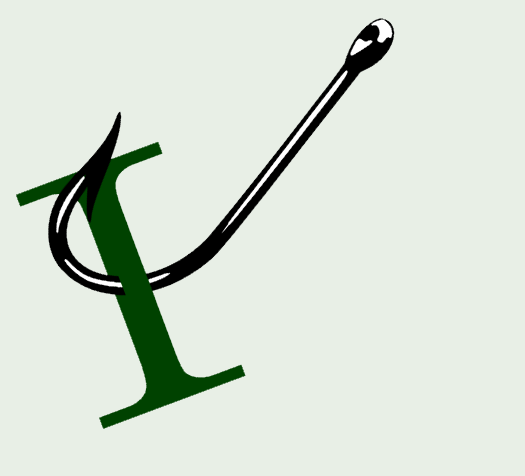

Security
Software Architecture
Kafka Is Not An Event Store by karoxi
Just Use Postgres as a Queue? by Derek Comartin
GitHib
.NET
ReSharper Made VS Code a Real Option for My .NET Work by Chris Woodruff
Display project Attribute (C#) by Karen Payne
What's new for .NET in Ubuntu 26.04 by Richard Lander
Give .NET Its Props - Central Package Management by Barret Blake
Like Vertical Slice Architecture? Meet Wolverine.Http! by Jeremy D. Miller
.NET 10.0.7 Out-of-Band Security Update by Rahul Bhandari (MSFT)
EF Core is Better with Wolverine – The Shade Tree Developer by Jeremy D. Miller
Removing byte[] allocations in .NET Framework using ReadOnlySpan
Customizing the Wolverine Code Generation Model – The Shade Tree Developer by Jeremy D. Miller
Project Management/Administration
Product Management with GenAI: What Changes and What Doesn't by Mark Levison
REST/APIs
With API Knowledge Comes Great Power by Kin Lane
Azure
Azure MCP Server now available as an MCP Bundle (.mcpb) by Victor Colin Amador
Axios npm Supply Chain Compromise – Guidance for Azure Pipelines Customers by Josef Sin
Write azd hooks in Python, JavaScript, TypeScript, or .NET by Kristen Womack
7 tips to optimize Azure Cosmos DB costs for AI and agentic workloads by Michal Toiba
Optimizing Git policy management at scale by Azat Galiev
Azure SDK Release (April 2026) by Ronnie Geraghty
General Availability: Dynamic Data Masking for Azure Cosmos DB by Sudhanshu Khera
Azure DevOps MCP Server April Update by Dan Hellem
Software Development
The Test Pyramid Is a Lie (and What I Do Instead) by Milan Jovanović
Highlights from Git 2.54 by Taylor Blau
AI
Vibe Coding Will Break Your Company by Dr. Jason Wingard
The AI Great Leap Forward (a warning) by Mike Amundsen
Vibing, Harness and OODA loop by Oskar Dudycz
Setting Up Claude Code Agent Teams With Wsl2 and Tmux on Windows by Ardalis (Steve Smith)
Are we the parents in the AI Agent relationship? The drama continues by Joseph Guadagno
GitHub Copilot meets Azure Developer CLI: AI-assisted project setup and error troubleshooting by Kristen Womack
Changes to GitHub Copilot Individual plans by Joe Binder
comments powered by Disqus